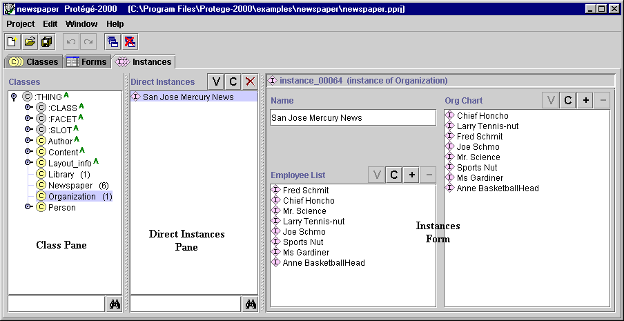

The Instances Tab
The Instances Tab

The Instances tab provides a window in which you may view, create, and
edit instances. (Classes model
concepts in your domain, slots model properties of classes and any
relationships between them, and instances model the actual data.)
An example of the Instances Tab is shown below. The window consists of three
panes:
- A Class pane at the upper left shows
the classes in a superclass/subclass relationship. The Instances Tab lets
you view classes, but you cannot edit or rearrange them. See the Classes
Tab for information about working with classes.
- The Direct Instances pane in the center shows
all the direct instances, if any, for the selected class, and allows you to view, edit, create, and delete
direct instances.
- When a single instance is selected, the Edit pane on the right contains the
Instance Form
for the selected instance. The Instance Form
displays all the slots which apply to the instance, and allows you to edit
them. The Instance Form can also be displayed as a
separate window by clicking the View
 icon in the Direct Instances pane.
icon in the Direct Instances pane.

For information about the Instances tab user interface and about accomplishing specific
tasks, see the Instances Table of Contents.
Next: The Class Pane at the
Instances Tab
Instances Table of Contents